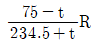
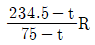
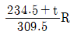
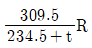
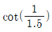
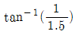
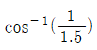
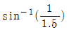
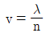
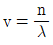

항로표지기사 (2015-08-16 기출문제)
1과목: 항로표지일반
1. 항해학에서 분류하는 항법의 종류가 아닌 것은?
- 천문항법
- 전파항법
- 추측항법
- 수평항법
(정답률: 69%)

2. 자오선(Meridian)에 대한 설명으로 거리가 먼 것은?
- 지구의 양 극을 지나는 모든 대권을 말한다.
- 지축을 품은 평면이 지구의 표면과 만나서 이루는 대권을 말한다.
- 자오선은 항정선과 직교한다.
- 영국의 그리니치 천문대를 지나는 자오선을 0° 로 하여 경도 계산의 기준으로 삼은 것을 본초자오선이라고 한다.
(정답률: 67%)
3. 항로표지의 기능에 따른 특수항로표지에 해당하지 않는 것은?
- 공사목적용 표지
- 교량용 표지
- 해양자료수집용 표지
- 레이더비콘 표지
(정답률: 85%)
4. 점장도법에 대한 설명으로 거리가 먼 것은?
- 항정선이 곡선으로 표시된다.
- 자오선은 남북방향의 평행선이고 거등권은 동서방향의 평행선으로 직교한다.
- 해도 위의 두 지점 간의 방위는 두 지점을 직선으로 연결하여 이 직선과 자오선과의 교각에 의해 구해진다.
- 고위도가 됨에 따라 거리, 넓이, 모양 등이 일그러지기 때문에 위도가 높은 지역의 해도로는 부적당하다.
(정답률: 64%)
5. IALA 해상부표식(B방식)에 있어서 항로표지 종류별 두표의 형상 표시방법이 틀린 것은?
- 방위표지용 : 원추형 두표 2개
- 우현표지용 : 원추형 두표 1개
- 고립장해표지용 : 구형두표 2개
- 안전수역표지용 : 구형두표 3개
(정답률: 92%)
6. 연안표지에 대한 설명으로 맞는 것은?
- 해안선에서 50마일 이상의 해양을 항해하는 선박이 선위를 확정하는데 필요한 표지시설을 말한다.
- 해안선에서 20마일 이상의 해양을 항해하는 선박에게 육지를 초인하게 하기 위하여 필요한 표지시설을 말한다.
- 해안선에서 20마일 이하의 해양을 항해하는 선박이 선위를 확정하는데 필요한느 표지시설을 말한다.
- 선박에게 항만의 소재를 표시하여 선박의 위치를 확정 시키는데 필요한 표지시설을 말한다.
(정답률: 84%)
7. 해도 도식 중 모래의 약어는?
- S
- G
- M
- St
(정답률: 83%)
8. 연안항법에서 중시선을 이용하는 경우로 거리가 먼 것은?
- 추정위치의 결정
- 선위 측정
- 컴퍼스 오차 측정
- 피험선 설정
(정답률: 54%)
9. 해도도식 중 PA 뜻은?
- 개략적인 위치
- 의심되는 위치
- 존재의 추측위치
- 의심되는 수심
(정답률: 82%)
10. 야간표지의 등질 중 섬광등(FI)의 일종으로 1분 동안에 60회 이상의 섬광을 발하는 등은?
- 호광등
- 군섬광등
- 군명암등
- 급섬광등
(정답률: 93%)
11. IALA 해상부표식(B지역) 중 안전수역표지의 도색은?
- 홍백횡선
- 홍백종선
- 황백횡선
- 황백종선
(정답률: 90%)
12. IALA 해상부표식(B지역)에서 좌현 우선항로표지에 적용되는 등질은?
- 초급섬광
- 복합군섬광
- 명암광
- 장섬광
(정답률: 67%)
13. 항로표지 등질의 분류에서 명암광에 대한 설명으로 옳은 것은?
- 한 주기 동안 빛을 비추는 시간이 꺼져있는 시간보다 짧은 등
- 한 주기 동안 2회 이상 섬광을 발하는 등
- 색깔이 다른 종류의 빛을 교대로 발하는 등
- 한 주기 동안에 빛을 비추는 시간이 꺼져 있는 시간보다 길거나 같은 등
(정답률: 79%)
14. IALA 해상부표식 B지역에서 사용되는 측방표지와 도색으로 옳은 것은?
- 좌현표지 : 녹색
- 우현표지 : 백색
- 좌현표지 : 홍색
- 우현표지 : 황색
(정답률: 82%)
15. 최근의 실측위치를 기준으로 하여 그 후 조타한 진침로와 기관의 회전수로 구한 항정에 의하여 선위를 결정하는 것은?
- 선위의 추측
- 선위의 추정
- 위치선의 추정
- 방위선에 의한 위치선
(정답률: 59%)
16. 등질의 약기호 Iso가 나타내는 것은?
- 장섬광
- 등명암광
- 단명암광
- 호광
(정답률: 91%)
17. 지반 내에 기초를 깊이 매몰하여 측면반력과 저면반력에 의하여 안정을 유지하는 기초형식은?
- 부착식
- 중력식
- 반력식
- 부력식
(정답률: 알수없음)
18. 교차방위법의 물표 선정 시 주의사항 중 거리가 가장 먼 것은?
- 해도상의 위치가 명홖하고 뚜렷한 목표를 선택한다.
- 물표가 2개일 때는 45° 정도가 가장 좋다.
- 물표가 많을 때는 2개보다 3개 이상을 선정하는 것이 좋다.
- 먼 물표보다는 적당히 가까운 물표를 선택한다.
(정답률: 알수없음)
19. 자이로 케이스와 수직 내환이 벗어나게 될 때 편각 신호를 발생시키는 장치는?
- 액체 안정기
- 서스펜션 와이어
- 추종 변압기
- 중추
(정답률: 70%)
20. 극초급섬광에 대한 반복소도는 분당 몇 회를 초과하면 안 되는가?
- 150회
- 200회
- 250회
- 300회
(정답률: 62%)
2과목: 전기·전자기초
21. 저항 R[Ω]이 온도 t[°C]일 때, 동선의 온도 75°C로 변화하였을 때 저항은?




(정답률: 알수없음)
22. 축전지의 용량에 대한 설명으로 옳은 것은?
- 축전지가 최고로 낼 수 있는 시간당 전류를 말한다.
- 충전완료로부터 방전종료 시까지의 맨 처음 시간의 전류를 말한다.
- 충전완료로부터 방전종료 시까지의 사용전류와 시간을 곱한 것을 말한다.
- 기전력과 전류의 곱을 말한다.
(정답률: 75%)
23. 전부하 근처에서 전압강하가 심한 발전기는?
- 차등복권기
- 과복권기
- 분권기
- 직권기
(정답률: 39%)
24. 다음 중 전기 기계에서 맴돌이 전류로 인한 영향은?
- 전력발생의 과다
- 전기기계의 제동
- 전기 기계의 온도상승
- 전기 기계의 수명 연장
(정답률: 73%)
25. 알칼리 축전지의 음극에 쓰이는 것은?
- 납
- 수산화니켈
- 카드뮴
- 가성가리
(정답률: 70%)
26. UPS시스템의 기본 구성요소가 아닌 것은?
- 정류기
- 변류기
- 축전지
- 인버터
(정답률: 알수없음)
27. 1m2의 단위면적에 5Wb의 자속이 통과하는 경우 자속밀도[Wb/m2]는?
- 2
- 5
- 25
- 2.5
(정답률: 70%)
28. 저항 R1=10Ω, R2=10Ω을 병렬로 연결한 경우 합성저항[Ω]은?
- 2.5
- 5
- 10
- 2
(정답률: 알수없음)
29. 직류발전기에서 보극에 대한 설명으로 옳은 것은?
- 전자기 반작용에 의한 영향을 경감시킨다.
- 기전력을 크게 하고자 할 때 사용한다.
- 주자극의 자력을 증가하기 위한 보조자극이다.
- 전압변동률을 감소하기 위한 것이다.
(정답률: 67%)
30. “2개의 물체를 마찰하면 마찰전기가 발생한다. 이는 마찰에 의한 열에 의하여 표면에 가까운 곳에 ( )가 이동하기 때문이다.” ( ）안에 알맞은 용어는?
- 양자
- 중성자
- 자유전자
- 전하
(정답률: 75%)
31. 상용 주파수의 교류용 전압계와 전류계로 널리 사용되는 것은?
- 전류전력형 계기
- 정류계형 계기
- 유도형 계기
- 가동철판형 계기
(정답률: 알수없음)
32. 코일단이 짧게 되어 재료가 절약되며, 고조파를 제거해서 기전력에 파형을 좋게 하는 동기발전기의 권선법은?
- 2층권
- 분포권
- 집중권
- 단절권
(정답률: 91%)
33. 다음 중 전원 회로의 구성요소가 아닌 것은?
- 전원트랜스
- 정류회로
- 평활회로
- 증폭회로
(정답률: 64%)
34. 자장의 세기가 10AT/m인 자장 안에 2Wb의 자극을 놓았다면 자극이 받는 힘은 몇 N인가?
- 10
- 20
- 30
- 5
(정답률: 59%)
35. 440V용 전동기 외함의 접지공사 방법은?
- 제1종 접지공사
- 제2종 접지공사
- 제3종 접지공사
- 특별 3종접지
(정답률: 82%)
36. 물질의 성질에 대한 전자 현상의 설명 주 올바른 것은?
- 게르마늄(Ge), 실리콘(Si)과 같은 4족의 물질은 외부로부터 열을 받아도 공유결합하기 때문에 자유전자를 전혀 내놓지 못한다.
- 원자의 전기 화학적 성질은 가전자의 수에 따라 정해지는데, 가전자 수가 8개가 되는 물질은 불안정하여 활성이 크며 불안정한 화합물이다.
- 4족 인 물질에 3족인 인듐(In)과 같은 물질을 첨가하면 1개의 전자가 부족하여 1개의 정공(hole)을 만들게 되며 전자를 1개 받아들일 수 있다.
- 4족인 원소에 5족인 불순물을 첨가하면, 자유전자 수는 8에서 첨가된 불순물의 수를 뺀 것과 같으며 자유전자는 소수 반송자(minority)가 된다.
(정답률: 알수없음)
37. 직류발전기의 구조에 있어서 절압(언더컷) 마이카 정류자(under-cut commutator)를 사용하는 이유는?
- 브러시(brush)와 정류자편 사이에 발생하는 불꽃을 방지하기 위하여
- 맴돌이 전류의 발생으로 인한 에너지의 소실을 방지하기 위하여
- 운전할 대에 발생하는 철심의 열을 감소시켜 온도의 상승을 방지하기 위하여
- 정류자편의 도전율을 높이기 위하여
(정답률: 75%)
38. 전동기의 회전 방향을 알기 위한 법칙은?
- 플레밍의 오른손 법칙
- 렌즈의 법칙
- 플레밍의 왼손 법칙
- 앙페르 오른나사 법칙
(정답률: 79%)
39. 지시계기의 구성 요소가 아닌 것은?
- 유도장치
- 구동장치
- 제어장치
- 제동장치
(정답률: 62%)
40. 전로의 절연저항 측정 시 대지전압이 150V를 넘고 300V이하인 절연 저항값은 몇 MΩ이상 이어야 하는가?
- 0.1
- 0.2
- 0.3
- 0.4
(정답률: 80%)
3과목: 광파·음파표지
41. 20Hz에서 20000Hz 까지 음을 파장으로 나타내면?
- 1.5cm~15cm
- 1.7cm~17cm
- 0.2cm~20cm
- 4.0cm~40cm
(정답률: 82%)
42. 등대 또는 등표 설계 시 지진력(t)을 구하는 방법은?
- 등탑자중 × 수평진도
- 등탑자중 × 풍압력
- 등탑자중 × 지반별 계수
- 풍압력 × 높이계수
(정답률: 90%)
43. 등대와 등표의 기초 중 얕은 기초의 종류가 아닌 것은?
- 중력식 기초
- 반력식 기초
- 부력식 기초
- 부착식 기초
(정답률: 75%)
44. 도등의 설치 목적으로 거리가 먼 것은?
- 분명하지 않은 가항수로의 표시
- 항만 또는 강어귀 특히 역류지점을 안전하게 접근하기 어려운 곳
- 수로의 가장 얕은 곳의 수심 표시
- 양방향 통항로의 분기점 표시
(정답률: 82%)
45. 빛의 전파에 대한 설명으로 거리가 먼 것은?
- 빛은 횡파이다.
- 빛의 진행 방향은 굴절률이 서로 다른 매질의 경계면에서 바뀐다.
- 빛은 입자성과 파동성을 모두 갖고 있다.
- 빛의 진행속도는 매질의 밀도에 관계없이 일정하다.
(정답률: 93%)
46. 색수차가 발생하는 원인은 빛의 어떤 성질 때문인가?
- 분산
- 반사
- 간섭
- 편광
(정답률: 94%)
47. 교량등 중에서 교각을 표시하는 표지등은?
- 녹색등
- 홍색등
- 백색등
- 황색등
(정답률: 85%)
48. 지리학적 광달거리 산출 시 관계없는 것은?
- 등화와 관측자의 수면상의 높이
- 지구의 곡률
- 대기 굴절
- 등화의 세기
(정답률: 알수없음)
49. 광달거리를 계산할 때 IALA에서 권고하는 기상학적 표준시정은?
- 10해리
- 11해리
- 12해리
- 13해리
(정답률: 91%)
50. 광파표지의 기본요건으로 적합하지 않은 것은?
- 섬광과 암간이 빠른 간격의 속도록 랜덤하게 반복할 것
- 요구되는 범위 내에서 충분히 볼 수 있을 것
- 등명기는 가능한 한 효율이 높고 신뢰성이 높을 것
- 항해자가 다른 등화와 식별할 수 있도록 등광에 개성을 주어 명료하게 구분할 수 있도록 하여야 할 것
(정답률: 88%)
51. 음속이 340m/s이고 1kHz의 음원이 10m/s로 관측자를 향이 이동해 오면 주파수는 몇 Hz인가?
- 1030.3
- 3400
- 1027.3
- 34000
(정답률: 60%)
52. 300~500[Hz] 저주파로서 음향을 발사하는 무신호기는?
- 에어사이렌(Air siren)
- 모터사이렌(Motor siren)
- 다이아폰(Diaphone)
- 전기폰
(정답률: 73%)
53. 에너지의 양자화 개념을 도입하여 흑체의 표면에서 복사되는 분광복사 발산도를 파장과 온도와의 관계로 표시한 이론은?
- 빈의 복사법칙
- 스테판-볼츠만 법칙
- 빈의 변위법칙
- 프랑크의 법칙
(정답률: 73%)
54. 평면 경계면을 통해 굴절률 1.5인 매질에서 1.0인 매질로 광이 진행할 때 경계면 상에서 전반사가 일어나는 최소 입사각은?




(정답률: 73%)
55. 파동의 전파속도 v, 파장 λ, 진동수 n이라할 때 관계식으로 옳은 것은?

- v=nλ


(정답률: 60%)
56. 50phon은 약 몇 sone인가?
- 2
- 3
- 4
- 5
(정답률: 82%)
57. 등대에 강력한 투광기를 부착하고 표시시점을 투사하여 위험구역을 표시하는 항료표지는?
- 도등
- 조사등
- 지향등
- 등선
(정답률: 91%)
58. 광파표지의 종류로 거리가 먼 것은?
- 부표
- 도등
- 지향등
- 등주
(정답률: 82%)
59. 교량등의 유효광도 값은 최소 몇 칸델라(cd)이상 되어야 하는가?
- 30
- 50
- 100
- 150
(정답률: 50%)
60. 광파표지 종류 중 암초, 수심이 얕은 곳에 설치된 등화를 갖춘 탑 모양의 구조물은?
- Mo(A) 8s
- FI(4) 8s
- LFI 10s
- Q(6)+LFI 15s
(정답률: 84%)
4과목: 전파표지 및 시스템이용
61. 전파를 수직으로 상공에 발사했을 때 전리층을 뚫고 나가지 않고 반사해서 되돌아오는 한계주파수는?
- 최고 사용 주파수
- 임계 주파수
- 최저 사용 주파수
- 최적 운용 주파수
(정답률: 90%)
62. GPS 관측치를 어떤 수신기로 관측하여도 그에 무관하게 공통적인 양식으로 변환되는 세계표준의 GPS 데이터 포맷(자료형식)은?
- ALMANAC
- RINEX
- DAT
- SSF
(정답률: 알수없음)
63. 임계주파수가 5.6MHz인 전리층에 30°의 입사각으로 전파를 입사시켰을 때 최고 사용 주파수는 약 몇 MHz인가?
- 3.5
- 4.5
- 5.6
- 6.5
(정답률: 알수없음)
64. GPS 측위 오차로 거리가 먼 것은?
- 고도 오차
- 멀티패스에 의한 오차
- 대류권 지연 오차
- 수신기 오차
(정답률: 54%)
65. LORAN-C 체인 기본국 구성방식이 아닌 것은?
- Star형
- Triad형
- Y형
- Z형
(정답률: 82%)
66. 레이더에서 Pulse파를 사용하는 이유로 적합하지 않은 것은?
- 광대역 신호를 보낼 수 있다.
- 회절이 많고 직진성이 좋다.
- 파장이 짧으며 작은 물체라도 반사가 잘된다.
- 지향성이 좋다.
(정답률: 92%)
67. 레이더의 거짓상 중 전파의 초굴절 현상에 의해 먼 곳의 물체가 근거리 영상으로 나타나는 것은?
- 2차 소인반사
- 간접반사
- 다중 반사
- 거울면 반사
(정답률: 82%)
68. 선박용 레이더에서 사용하는 전파로서 마이크로파를 사용하는 이유로 가장 거리가 먼 것은?
- 광의 특성과 유사하게 직진하기 때문에
- 파장이 짧아 안테나를 소형으로 만들 수 있기 때문에
- 파장이 짧아 적은 표적에서도 반사가 되기 때문에
- 비나 눈에 의한 영향이 적기 때문에
(정답률: 85%)
69. LORAN-C 체인에서 종국이 주국의 신호를 수신한 순간부터 종국의 신호를 발사할 순간까지의 약속된 대기 시간은?
- CD (CODING DELAY)
- ED (EMISSION DELAY)
- GRI (GROUP REPETITION INTERVAL)
- BD (BASELINE DELAY)
(정답률: 82%)
70. LORAN-C의 주국에서 발사하는 펄스군 중 9번째 펄스에 대한 설명으로 맞는 것은?
- 주파수 차 계산
- 발신국 원근 식별
- 사용하는 국의 적합성 판별
- 주국 신호의 식별
(정답률: 90%)
71. 측정오차에서 “그 원인을 조사해서 수정 또는 개정”할 수 있는 오차는?
- 기계오차
- 계통오차
- 우연오차
- 선형오차
(정답률: 80%)
72. 전파표지에 사용되는 각 장비의 측정방식 중 쌍곡선을 이용한 측정방식이 아닌 것은?
- LORAN-C
- 데카
- 오메가
- GPS
(정답률: 84%)
73. DGSP시스템 구성요소 중 각 위성신호를 수신하여 측정된 거리(의사거리)와 이미 알고 있는 거리를 비교 후 위상오차값을 보정하는 곳은?
- 감시국
- 통제센터
- 기준국
- 보정송신국
(정답률: 65%)
74. 전파 예측모델을 이용하는 변수가 아닌 것은?
- 이용주파수
- 안테나의 높이
- 송신점과 수신점간의 거리
- 평균 통화시간
(정답률: 90%)
75. 무선 전파 송수신기를 이용하여 선박의 위치정보 등을 자동으로 송수신하는 것은?
- 위성항법보정기준국(DGPS)
- 선박통항서비스(VTS)
- 선박자동식별장치(AIS)
- 해상정보 및 통신시스템(MICS)
(정답률: 79%)
76. 펄스폭이 2μs인 레이더의 최소 탐지거리는 몇m인가?
- 150
- 300
- 450
- 600
(정답률: 73%)
77. LORAN-C에서 펄스군 반복주기(GRI)를 결정할 때 고려할 사항이 아닌 것은?
- 펄스의 크기
- 기선장
- 코딩딜레이 (Coding Delay)
- 체인내의 종국 수
(정답률: 70%)
78. LORAN-C의 통제방식 중 기선상에 있는 종국의 LORAN-C 감시용 수신기로부터 정보를 이용한 기선통제는?
- Alpha통제
- Charlie통제
- Bravo통제
- Delta통제
(정답률: 알수없음)
79. GPS 위성의 고도와 궤도의 적도면에 대한 경사각도는?
- 약 20000[km], 55°
- 약 25000[km], 53°
- 약 28000[km], 75°
- 약 30000[km], 51°
(정답률: 84%)
80. 전파 경로를 달리하는 전파간의 간섭 또는 전파 경로의 상태 변화에 의하여 전계 강도가 시간적으로 변화하는 현상은?
- Fading
- Magnetic storm
- Dellinger
- Radio echo
(정답률: 92%)